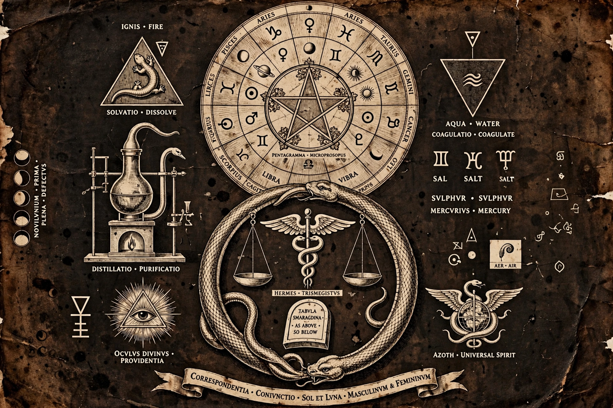

| Occultism | |
 | |
| Fields | Alchemy, astrology, divination, natural magic, ritual magic, Hermeticism, Kabbalah |
|---|---|
| Key figures | Hermes Trismegistus, Agrippa, John Dee, Éliphas Lévi, Helena Blavatsky, Aleister Crowley |
| Related | Esotericism, mysticism, Theosophy, ceremonial magic |
The occult (from the Latin occultus, "hidden" or "secret") is a category of esoteric or supernatural beliefs and practices which generally fall outside the scope of organized religion and conventional science. Occultism refers to the study and practice of such hidden knowledge, encompassing traditions such as alchemy, astrology, divination, Hermeticism, Kabbalah, natural magic, and ritual or ceremonial magic.
The term has been used in varied senses across history. In the Renaissance, "occult philosophy" described the study of the hidden sympathies and forces believed to operate in nature. In the nineteenth and twentieth centuries, occultism became associated with a distinct religious and cultural movement involving secret societies, magical orders, and figures such as Éliphas Lévi, Helena Blavatsky, and Aleister Crowley.
The word derives from the Latin occultus, the past participle of occulere, "to conceal." Occult qualities, in early modern natural philosophy, were properties of things whose causes were hidden — such as the attractive power of a magnet or the influence of the stars — as opposed to manifest qualities like color and weight. Scholars of esotericism, notably Antoine Faivre, have characterized Western esotericism by ideas such as universal correspondences, living nature, imagination as a way of knowing, and experiences of transmutation.
Occult practices have roots in the ancient world: Babylonian and Egyptian astrology, Greek and Hellenistic magic, Hermetic texts attributed to Hermes Trismegistus, and Jewish mystical traditions that developed into Kabbalah. In the medieval period, Arabic scholars preserved and developed alchemy and astrology, transmitting them to Latin Europe along with texts on talismans and natural magic.
Renaissance thinkers such as Marsilio Ficino, Giovanni Pico della Mirandola, and Heinrich Cornelius Agrippa sought to synthesize Hermeticism, Kabbalah, Neoplatonism, and natural magic into a unified "occult philosophy." Agrippa's Three Books of Occult Philosophy (1531–1533) became a standard reference. John Dee, mathematician and adviser to Elizabeth I, combined angelic magic with mathematical and navigational science.
Although the Scientific Revolution and the Enlightenment pushed occult explanations to the margins of learned culture, occult interests persisted in Freemasonry, Rosicrucianism, and mesmerism. The nineteenth century saw a marked revival: Éliphas Lévi reworked ritual magic in the 1850s, and in 1875 Helena Blavatsky co-founded the Theosophical Society, which popularized ideas such as reincarnation, karma, and hidden masters for a Western audience. The Hermetic Order of the Golden Dawn, founded in 1888, systematized ceremonial magic drawing on Kabbalah, astrology, alchemy, and Egyptian symbolism.
Aleister Crowley, a former Golden Dawn member, founded the religion of Thelema and influenced much subsequent occult practice. Mid-century figures such as Gerald Gardner shaped modern witchcraft (Wicca), while chaos magic emerged in the 1970s with an emphasis on belief as a tool. Occult themes permeate modern popular culture, and academic study of esotericism is now an established field within religious studies.
See also: Starhawk, Western esotericism, Hermeticism, Theosophy, Aleister Crowley